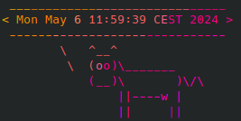
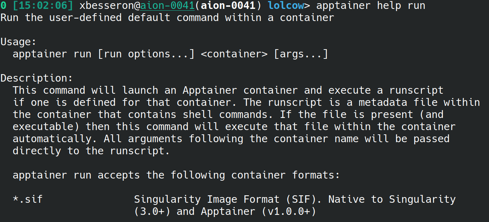
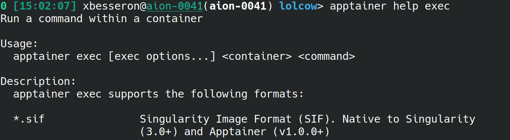
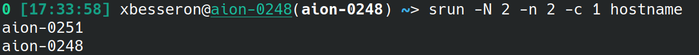

Containers on HPC with Apptainer
- Authors: Xavier Besseron (University of Luxembourg)
- License: ©2024 CC BY-NC-SA 4.0
- Date of practical: Tuesday 7th of May 2024
🔵 Introduction
Welcome to our practical session on Containers on HPC with Apptainer.
In this session, we will explore how containers can help in controlling the computing environment and, to some extent, ensure portability. We will also focus on performance issues and see how to leverage the best HPC interconnect within the container.
This practical will be using Apptainer, a powerful tool that simplifies the process of creating and managing containers with a special focus on HPC platforms. Apptainer is an open-source project that enables users to package software applications and their dependencies into a single, portable container. These containers can then be run on any Linux machine, ensuring that your software behaves the same way, regardless of the environment.
Objectives
This session will cover 2 parts:
- Getting Started with Apptainer: You will go through the basic process of building Apptainer images and using them on HPC using the 'Lolcow' example.
- Apptainer with MPI: You will create and run advanced containers based on MPI and take advantage of the HPC fast network.
The exercises will also refer to external documentation and instructions that need to be consulted. The aim is for you to be independent and work in 'real conditions' by finding the information you need to complete the tasks.
Instructions
This practical is an individual work to be carried out on the Aion cluster of the HPC platform of the University of Luxembourg.
It is composed of different elements:
- this page that contains instructions and questions;
- the GitHub Classroom repository that contains the materials for the exercises;
- the report that you have to submit via GitHub Classroom with the rest of the requested documents
Report
Together with this tutorial, you need to prepare a short report of your work:
- There is no template, you can start from a blank document. Keep it simple, clear and well-organized.
- Make sure you answer all the questions (cf below), with text, code or screenshots as requested.
- Prepare your report at the same time you're doing the exercises.
- Submit your report as a PDF file to your GitHub Classroom repository and push it before the deadline.
Question 0: What? Who? When?
Indicate at the beginning of your report:
- the title of the practical
- your full name
- your Uni.lu HPC username
- your GitHub username
- the date
🔵 Part 0: Setup
GitHub Classroom Repository
Following the same approach as the previous practicals, this practical relies on Git Classroom to distribute the extra materials and for the submission of the report. To create your copy of the repository, follow the invitation link and accept the assignment:
Assignment link: https://classroom.github.com/a/MK1i9iX5
If you need detailed explanations, please refer to the first week's instructions for Setting up Git and downloading the materials.
Connection to a Compute Node
The exercises are to be carried out in interactive mode on a compute node of the Aion cluster of the University of Luxembourg.
As a reminder, here are the steps to access a compute nodes:
- Connect to the access node of the Aion cluster (cf Connection to HPC Access)
- Find your reservation, if application (cf Finding your reservation)
- Connect to a compute node (cf Connection to a compute node)
Recommended Settings
For this practical session, the following options are suggested:
- Partition:
interactive - QoS:
debug - Reservation:
hpc_software_5d07during the Tuesday afternoon session - Time: 2 hours (or ending before the end of the reservation)
- Node: Two compute nodes
- Tasks: Two tasks (one task per node)
- Cores: 16 cores per task
Your access command line should look like this:
salloc -p interactive --qos debug --reservation=hpc_software_5d07 --time=2:00:00 -N 2 -n 2 -c 16
Aion cluster will be down from Monday 13/05 until 17/05.
The HPC platform of the University of Luxembourg will be on maintenance from 13/05 to 17/05. You won't be able to access your data and the computing resources during this period.
Using Apptainer on Uni.lu HPC
Apptainer is already installed on the Uni.lu HPC and is available as a module. To use it, just load the right module.
# Load Apptainer module
module load tools/Apptainer/1.2.1
# Workaround bug on Uni.lu HPC platform
chmod 777 /tmp/
Workaround for bug on Uni.lu HPC platform
There is a bug on the Uni.lu HPC platform with the permission of /tmp within a SLURM job.
This bug prevents some Apptainer containers from being built correctly.
Until the bug is fixed, it is possible to work around it using the command chmod 777 /tmp/ after connecting to the compute node of the SLURM reservation.
In addition, we will make use of the more recent toolchain gompi/2023a. Make sure you update your module path to make it available to you.
# Update MODULEPATH for toolchain gompi/2023a
module use /work/projects/mhpc-softenv/easybuild/aion-epyc-prod-2023a/modules/all/
🔵 Part 1: Getting Started with Apptainer

To get started with Apptainer, we will build the example container provided in the documentation. Let's have a look at the example given on the page Building containers from Apptainer definition files.
Building the lolcow container
This example creates a lolcow container which is a combination of the cowsay and lolcat tools.
The definition file lolcow.def for this container looks like this:
Bootstrap: docker
From: ubuntu:20.04
%post
apt-get -y update
apt-get -y install cowsay lolcat
%environment
export LC_ALL=C
export PATH=/usr/games:$PATH
%runscript
date | cowsay | lolcat
This definition file describes the procedure to build the lolcow container:
- Bootstrap the container from the Docker image
ubuntu:20.04; - Install the package
cowsayandlolcat; - Set some environment variables;
- Define a command to run when executing the container.
A more complete list of section names for the definition is available in the Apptainer documentation.
From this definition file, you can build the container with this command:
apptainer build lolcow.sif lolcow.def
This command takes the definition file lolcow.def to create a new container image in the file lolcow.sif.
Update Question 1
The apptainer build is currently not working. Instead, you can make a copy of a pre-build image:
cp /work/projects/mhpc-softenv/W11-Containers_on_HPC/lolcow-ORIG.sif .
Question 1: Build the lolcow container
Create the lolcow.def file and build the container and copy the image file /work/projects/mhpc-softenv/W11-Containers_on_HPC/lolcow-ORIG.sif instead.
What is the size of the container image? Write down the answer in your report.
Using the lolcow container
The two main commands to use a container are run and exec. Let's look at the messages with apptainer help run and apptainer help exec:


We can now start using the newly created container:
apptainer run lolcow.sifruns the container with its default command.apptainer exec lolcow.sif dateruns the commanddatein the container environment.apptainer exec lolcow.sif bashstarts in an interactive bash inside the container.
Question 2: Run the lolcow container
Run the lolcow container with its default command.
Take a screenshot 📸 and save it to your report.
Question 3: Differences between the Aion environment and the container environment
Run the following commands in the Aion environment (i.e., outside the container) and within the container:
- Current date and time:
date - Compute node:
hostname - Version of the Linux kernel:
uname -a - Name and version of the Linux distribution:
cat /etc/os-release - Username:
echo $USER - List of users' home directories:
ls /home/users/
What are the main differences? Summarize the results in your report.
Update the lolcow container
For this exercise, you have to update the container definition and rebuild it.
Update Question 4
The apptainer build is currently not working. Instead, you can make a copy of a pre-build image:
cp /work/projects/mhpc-softenv/W11-Containers_on_HPC/lolcow.sif .
Question 4: Update the container
- Update the definition file for the lolcow container with the following changes:
- Use the base image for Ubuntu 24.04
- Set the default command to
echo "Hello! My username is $USER." | cowsay | lolcat - Add a new label
Authorwith your first and last name. Check the documentation for the%labelssection to find help related to the syntax.
Build the updated containerand copy the image file/work/projects/mhpc-softenv/W11-Containers_on_HPC/lolcow.sifinstead.- Run the container with
apptainer runand check its metadata withapptainer inspect.
In your report:
- Add the updated definition of the lolcow container to the
lolcowdirectory of your GitHub Classroom repository. - Take a screenshot 📸 of the output of the
runandinspectcommands, and save it to your report.
🔵 Part 2: Apptainer with MPI
For this part, we will build an Apptainer container for the OSU Micro-Benchmarks. As we have seen previously, they are a collection of programs designed to measure the performance of various communication libraries, including MPI, OpenSHMEM, UPC++ and NCCL.
These benchmarks measure the low-level performance of fundamental communication patterns:
- Point-to-point: Direct communication between two processes.
- Collective: Communication involving multiple processes (e.g., broadcast, reduce).
- One-sided: One process directly accessing the memory of another without explicit involvement from the remote process.
We will use this benchmark to measure and compare the performance of the MPI communication with and without the use of containers.
Build OSU Micro-Benchmarks without container
As a baseline for our comparison, we will build a native version of the OSU Micro-Benchmarks based on the gompi/2023a toolchain of the Aion cluster.
To make things easier, an EasyBuild recipe for the latest OSU Micro-Benchmarks 7.4 is available in the omb_mpi directory of your GitHub Classroom repository.
Follow these steps to build the latest OSU Micro-Benchmarks on Aion:
- Load the EasyBuild module (version 4.9.0 or 4.9.1, do
module use ~/.local/easyconfig/modules/allif necessary); - Check your version of EasyBuild;
- Build OSU Micro-Benchmarks 7.4 with toolchain
gompi/2023ausing the EasyConfig file available inomb_mpidirectory; - Load the newly created module for OSU Micro-Benchmarks 7.4;
- Run the command
srun -n 2 -c 1 osu_helloto check that it works.
Question 5: Install OSU Micro-Benchmarks 7.4 for toolchain gompi/2023a
In your report:
- Write down the commands you have used to perform the 5 steps above.
- Take a screenshot 📸 of the output of these commands, and add it to your report.
Build OSU Micro-Benchmarks container
We will now build a container image for the OSU Micro-Benchmarks. To maximize the compatibility with the OpenMPI of the Aion cluster and to simplify the MPI binding, this image will be based on the same Linux distribution (Red Hat Enterprise Linux 8) and the same version of MPI.
A definition file omb.def is already available for you in the omb_mpi directory of your Github Classroom repository.
This definition file is incomplete and you need to update it to set:
- the version of OpenMPI to match the one of the toolchain
gompi/2023aavailable on the Aion cluster; - the version of OSU Micro-Benchmarks to match the one that you installed previously.
Update Question 6
The apptainer build is currently not working. Instead, you can make a copy of a pre-build image:
cp /work/projects/mhpc-softenv/W11-Containers_on_HPC/omb.sif .
Question 6: Build OSU Micro-Benchmarks container
- Edit the definition file
omb.defand the variablesOMPI_VERSIONandOMB_VERSIONto the correct version. Build the containeromb.sifusing your updated definition fileomb.def. (The build should take less than 5 minutes.)- Copy the image file
/work/projects/mhpc-softenv/W11-Containers_on_HPC/omb.sifinstead - If the container works, commit the change of the
omb.deffile to your GitHub Classroom repository.
Run the OSU Micro-Benchmarks
We will now compare the performance of the different builds of the OSU Micro-Benchmarks and the different execution models. We consider three configurations to compare:
- OSU Micro-Benchmarks compiled with toolchain
gompi/2023awithout container: We will call it Native. - OSU Micro-Benchmarks from the container executed with the Hybrid Model: We will call it Apptainer Hybrid.
- OSU Micro-Benchmarks from the container executed with the Bind Model: We will call it Apptainer Bind.
In addition, we will consider two performance metrics:
- The inter-node MPI latency, measured using the command
osu_latencybetween two distinct compute nodes; - The inter-node MPI bandwidth, measured using the command
osu_bwbetween two distinct compute nodes;
Before starting, let's make sure we use the correct srun command to
To measure the inter-node performance, we want to use two distinct compute nodes.
For that, we will use the following SLURM options for srun:
-N 2: Use two compute nodes-n 2: Start two tasks (or processes)-c 1: Use one core per task
Thus, the srun command line looks like this: srun -N 2 -n 2 -c 1 COMMAND.
We can test it on the hostname command to make sure that the processes are started on two different compute nodes.
The output should look like this.

We can now execute the performance tests for the three configurations. Let's start with the latency.
# Run OMB latency with 'Native' configuration
srun -N 2 -n 2 -c 1 osu_latency | tee omb_latency_native.txt
# Run OMB latency with 'Apptainer Hybrid' configuration
srun -N 2 -n 2 -c 1 apptainer exec omb.sif osu_latency | tee omb_latency_hybrid.txt
# Run OMB latency with 'Apptainer Bind' configuration
BIND_OPTION="--bind /work/projects/mhpc-softenv/easybuild/aion-epyc-prod-2023a/software/OpenMPI/4.1.5-GCC-12.3.0:/opt/ompi,/work/projects/mhpc-softenv/easybuild/aion-epyc-prod-2023a/software,/usr/lib64,/etc/libibverbs.d"
srun -N 2 -n 2 -c 1 apptainer exec ${BIND_OPTION} omb.sif osu_latency | tee omb_latency_bind.txt
These commands above save the output of each execution in different output files.
What is the bind option?
The 'Apptainer Bind' configuration relies on the --bind option of Apptainer to inject the MPI library of Aion inside the container.
This allows for the application to benefit from the most optimized MPI configuration.
In this case, the bind option performs many bindings:
- The directory
/work/projects/mhpc-softenv/easybuild/aion-epyc-prod-2023a/software/OpenMPI/4.1.5-GCC-12.3.0of Aion is bound to the/opt/mpidirectory in the container. That effectively replaces the MPI installed in the container by the MPI of Aion. - The directory
/work/projects/mhpc-softenv/easybuild/aion-epyc-prod-2023a/softwareof Aion is bound to the directory with the same name inside the container. This is necessary to provide some of the dependencies required by the OpenMPI of Aion likehwloc,libpciaccessand many others. - Similarly, the directory
/usr/lib64of Aion is bound to the directory with the same name inside the container. This is necessary to provide other system libraries that are not installed in the container but that are necessary for the OpenMPI of Aion and its dependencies. - The directory
/etc/libibverbs.dis bound to the directory with the same name inside the container. It provides configuration information related to the InfiniBand driver to be used for the Aion interconnect hardware.
Now, it is your turn to write and execute the commands to measure the inter-node MPI bandwidth with the osu_bw benchmark with the three configurations.
Save the output of the measurement in output files named omb_bw_XXXX.txt.
Question 7: Performance Measurements
Run the performance measurements listed above. You should have 2 metrics and 3 configurations.
Save the output files in the omb_mpi directory and add them to your GitHub Classroom repository.
Question 8: Performance Plots
Create graphic plots to show and compare the results of your performance measurements:
- One plot for inter-node latency comparing the 3 configurations;
- One plot for inter-node bandwidth comparing the 3 configurations;
You can use the tool of your choice, on the HPC or on your laptop, to generate the plots (GNUplot, R ggplot, Python Matplotlib, ...). Please follow these recommendations:
- Use a log scale on the X and Y axes to make the data more visible and easier to compare at the different scales.
- Set proper labels, keys and titles to help read the plots.
Save the plot files as PDF or PNG in the omb_mpi directory and add them to your GitHub Classroom repository.
Comparison of the approaches
Question 9: Performance Comparison
In your report, describe and compare the latency and bandwidth performance of the different configurations. Which approach(es) are the best in terms of performance?
Question 10: Qualitative Comparison
What are the pros and cons of the different approaches? In your report, answer in a few sentences considering different aspects:
- Installation or creation of the container
- Usage and portability on other HPC machines
- Performance
- For MPI or non-MPI applications
🔵 Report submission
Don't forget to add and push all the required files to your GitHub Classroom repository:
- the requested files;
- the report, including the answers to all the questions and the screenshots.
Don't add any other files and directories (for example, build directories, executables, Makefile, etc.).
Finalize your report and save it as a PDF (no other format allowed!) in the report sub-directory of your GitHub Classroom repository.
Uploading your report
You don't need to copy it to the HPC to upload your report. Instead, you can use the Add file button directly on the GitHub webpage.
Files Submission
Your files and report are considered submitted once they are pushed to your repository.
Check your GitHub repository online to make sure: https://github.com/MHPC-HPCSoftwareEnvironment/w11-containers-on-hpc-XXX
Passed the deadline at 13/05/2024 08h00 you won't be able to push anymore.